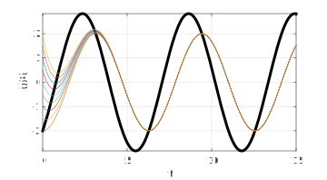

Section 1.5 Using complex numbers
¶Refer to section 1.5 of the text.
(For a really smart and entertaining introduction to complex numbers, I recommend this video series.)
We need to take a short but highly relevant detour to talk about complex numbers.
There's often a lot of uneasiness about complex numbers. Terminology is part of the reason. Using "real" and "imaginary" to label numbers suggests a strong value judgment, one that ruled mathematics for centuries. But complex numbers are actually just as "real" as so-called real numbers. If anything, they are actually more fundamental to the universe.
As a practical matter, you can pretty much always replace a complex value with two real ones, and vice versa. But sometimes the manipulations are a lot easier in the complex form. In particular, you may be able to replace trigonometry with algebra.
Subsection 1.5.1 The reality of imaginary numbers (optional)
Let's rewind a bit. We can probably take for granted the positive integers 1, 2, 3, and so on, and we'll throw in zero too (though this too was controversial for centuries). It's not long before we want to solve a problem like $x+1=0$. Annoyingly, we can pose the problem using just nonnegative integers, but we can't solve it. So we accept the existence of the negative integers.
I can imagine quite a bit of skepticism about this historically. ("Sure, Wei. Ever seen a negative goat?") But if you've ever taken out a loan, you know that negative numbers can have very real consequences.
Eventually, the negative integers seem "obvious" and perfectly natural. But then we run into a problem like
\begin{equation*}
2x - 1 = 0\text{.}
\end{equation*}
We can pose this problem with integers, but we can't solve it. So we get used to accepting rational numbers, too.
Rational numbers are pretty weird. Between any pair of them, you have infinitely more rational numbers! Yet it turns out they have (huge) gaps as well. You can't solve
\begin{equation*}
x^2 - 2 = 0
\end{equation*}
using only rational numbers. So, you're willing to take on irrational numbers too. Talk about weird--every one of them has an infinite, non-repeating decimal expansion.
So much for the "real" numbers. At least we have filled in the so-called number line. But then you get to
\begin{equation*}
x^2 + 1 = 0\text{,}
\end{equation*}
which is purely "real" but insolvable. Solutions to this equation were widely resisted for a very long time (say, the 18th century), to the point they were called "imaginary" (thanks, Descartes).
Yet something amazing happens if you do accept imaginary numbers, and their expansion to the complex numbers. Namely, The Fundamental Theorem of Algebra, which states that if you write down a polynomial using complex numbers, it will have only complex numbers as solutions. So there's no infinite ladder of hypercomplex numbers that we have to ascend--just one rung past the "real" ones.
Subsection 1.5.2 The polar form of complex numbers
¶When you first learned complex numbers, you probably wrote them as \(z=x+iy\text{,}\) where \(x=\Re(z)\) and \(y=\Im(z)\) are real. This is equivalent to rectangular or Cartesian coordinates in the plane to specify the point \((x,y)\text{.}\)
Euler's identity (1.2.1) gives us an equally important alternative. Recall that \(e^{it}=\cos(t)+i\sin(t)\) for real values of \(t\text{.}\) If \(r\) is a positive number, and we write
\begin{equation*}
re^{i\theta} = (r\cos \theta)+i(r\sin \theta)\text{,}
\end{equation*}
then it is clear that \((r,\theta)\) represent the polar coordinates of the point with \(x=r\cos\theta\text{,}\) \(y=r\sin \theta\text{.}\) The polar \(r\) has another name and notation in the complex context: the modulus \(|z|\text{.}\) (The angle \(\theta\) might variously be called the argument or phase of \(z\text{.}\))
In rectangular form, addition and subtraction of complex numbers is trivial: \((x+iy) \pm (u+iv)= (x+u)+i(y+v)\text{.}\) In polar form, it's multiplication and division that become easy:
\begin{equation*}
(re^{i\theta})(se^{i\phi}) = rse^{i(\theta+\phi)}, \qquad
\frac{re^{i\theta}}{se^{i\phi}} = \frac{r}{s}e^{i(\theta-\phi)}\text{.}
\end{equation*}
A common operation on complex numbers that has no real analog is taking conjugates. We find the conjugate \(\overline{z}\) of \(z\) by replacing all instances of \(i\) with \(-i\text{.}\) In the two canonical forms we have
\begin{equation*}
\overline{x+iy} = x-iy, \qquad \overline{re^{i\theta}} = re^{-i\theta}\text{.}
\end{equation*}
An important identity, easy to work out, is \(|z|^2=z\cdot \overline{z}\text{.}\)
Subsection 1.5.3 Shifted cosines
¶Here comes a trick we will be relying upon later. The the shifted cosine function
\begin{equation}
f(t)=R\cos(\omega t - \phi)\label{eq-fo-ampphase}\tag{1.5.1}
\end{equation}
has amplitude \(R\text{,}\) angular frequency \(\omega\text{,}\) and phase shift \(\phi\text{.}\) Using Euler's identity, we can think of \(f\) as the real part of a complex exponential \(Re^{i(\omega t-\phi)}\text{.}\) This can be manipulated into
\begin{equation*}
R e^{-i\phi} e^{i\omega t} = (R\cos \phi - i R \sin \phi) ( \cos \omega t + i \sin \omega t)\text{.}
\end{equation*}
Upon taking the real part of the product, we conclude
\begin{equation*}
f(t) = R\cos \phi \cos \omega t + R \sin \phi \sin \omega t\text{.}
\end{equation*}
What's more, we can run that process in reverse. Suppose we are given some real harmonic signal
\begin{equation}
g(t) = A \cos \omega t + B \sin \omega t\text{.}\label{eq-fo-sincos}\tag{1.5.2}
\end{equation}
Now find \(R\) and \(\phi\) such that \(A=R\cos \phi\) and \(B=R \sin \phi\text{.}\) This is equivalent to converting a Cartesian point \((A,B)\) to polar form \((R,\phi)\text{,}\) which is easy-peasy. But now we can say that \(g\) is equivalent to \(f\) in (1.5.1).
The bottom line is that we can write a harmonic signal in either the amplitude/phase form (1.5.1) or the sin/cos form (1.5.2). They are completely equivalent, and we can use whichever one is more convenient at a particular moment.
Subsection 1.5.4 Forcing with a complex exponential
¶Let's say we want to solve \(y'=ay + \cos(\omega t)\text{.}\) We can recognize the forcing signal as the real part of \(e^{i\omega t}\text{.}\) Since we solved this problem with exponential forcing in the last section, we can apply the formula there and then take the real part to get the general solution of the original problem.
However, a modified approach cuts down on the amount of algebra we need to do. We'll use the complex form to find a particular solution of the real problem, then add in the null solution to get a general solution. This is quite straightforward. To make \(y=Ye^{i\omega t}\) a particular solution with forcing \(q=e^{i\omega t}\text{,}\) we need only require that
\begin{equation*}
i\omega Y e^{i\omega t} = a Ye^{i\omega t} + e^{i\omega t} \quad \Rightarrow
\quad Y = \frac{1}{i\omega - a}\text{.}
\end{equation*}
That is, the particular solution is just \(\frac{1}{i\omega - a}\) times the forcing signal. If we express \(Y\)> in polar form, Let's express this multiplicative factor in polar form:
\begin{equation*}
\frac{1}{i\omega - a} = G e^{-i\alpha}\text{,}
\end{equation*}
then a particular solution is
\begin{equation*}
y_p(t) = G e^{-i\alpha} q(t) = G e^{i(\omega t - \alpha)}\text{.}
\end{equation*}
On taking the real part of this, we obtain \(y_p=G \cos(\omega t - \alpha)\) as a particular solution when \(q=\cos(\omega t)\text{.}\) We call the real values \(G\) and \(\alpha\) the gain and phase lag, respectively.
Now suppose we generalize a bit to \(q=A \cos(\omega t) + B\sin(\omega t)\text{.}\) We know that this is equivalent to \(q=R \cos(\omega t-\phi)\text{,}\) which is the real part of a complex exponential. Following the exact same trail as before, we still find that \(y_p(t) = G e^{-i\alpha} q(t)\) is a particular solution and want to take the real part. There are two ways to go here.
- If \(q\) is used in shifted cosine form, then a real particular solution is \(y_p=GR \cos(\omega t-\phi-\alpha)\text{.}\)
- If \(q=A \cos(\omega t) + B\sin(\omega t)\) and you don't want to recast it into shifted cosine form, you get a messier equivalent result:\begin{equation*} y_p = (G \cos \alpha)[ A \cos(\omega t) + B\sin(\omega t) ] + (G \sin \alpha)[ A \sin(\omega t) - B\cos (\omega t)]\text{.} \end{equation*}
Suppose we are given the purely real problem \(y'+y = 2 \sin(t) - 2 \cos(t)\text{.}\) The tedious details of deriving the solution can hide the fact that the essence of the matter is quite simple. A plot of some solutions tells the story.
q = @(t) 2*sin(t)-2*cos(t);
fplot(q,[0 15],'k','linew',3)
hold on
dydt = @(t,y) -y + q(t);
t = linspace(0,15,500);
for y0 = -2:.5:2
[t,y] = ode45(dydt,t,y0);
plot(t,y)
end
grid on
xlabel('t'), ylabel('y(t)')

The forcing function is, as we now know, a shifted cosine (the thick black curve). You can see that after a short initial stage, the solution always settles into a single shifted cosine at the same frequency but with a different phase and amplitude, as determined by the lag and gain. To wit, for an input at frequency \(\omega\text{,}\)
\begin{equation*}
G e^{-i\alpha} = \frac{1}{i\omega + 1}\text{.}
\end{equation*}
Here we have \(\omega=1\text{,}\) and thus
\begin{equation*}
G e^{-i\alpha} = \frac{1}{i + 1} = \frac{1}{i + 1}\cdot \frac{-i+1}{-i + 1} = \frac{1-i}{2}\text{.}
\end{equation*}
The cartesian point \((1/2,-1/2)\) is easy to put into polar form, and we find \(G=1/\sqrt{2}\) and \(\alpha=\pi/4\text{.}\) That is, the particular solution has 70% of the amplitude and lags the driving force by one-eighth of a cycle, as observed in the plot above.
As for the solution details? The elegant route is to note that the point \((-2,2)\) has polar coordinates \(R=2\sqrt{2}\) and \(-\phi=\pi/4\text{,}\) so that
\begin{equation*}
q(t) = 2\sqrt{2} \cos\left(t + \frac{\pi}{4} \right)\text{.}
\end{equation*}
Then a particular solution is
\begin{equation*}
y_p = \left(\frac{1}{\sqrt{2}}\right)\left(2\sqrt{2}\right) \cos\left(t + \pi/4 - \pi/4\right) = 2\cos(t)\text{,}
\end{equation*}
and the general solution is \(y=C e^{-t} + 2\cos(t)\text{.}\) The initial condition determines \(C\text{,}\) but the solution always trends towards our \(y_p\text{.}\)
Naturally, if the null solution \(Ce^{at}\) has exponential growth because \(a \gt 0\text{,}\) the particular solution quickly becomes insignificant as \(t\) marches forward. In the case of decay, though, we always find that it's the initial value that becomes irrelevant, as in the example above, and the effect of the ODE is to change the amplitude and phase of the input.